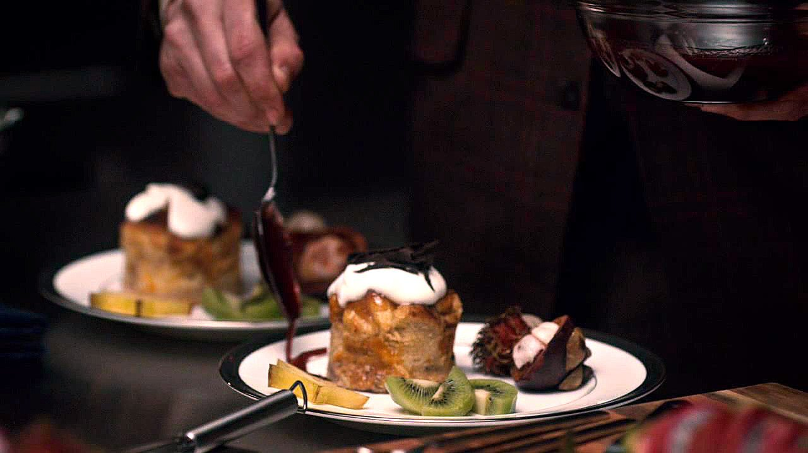

Sangunaccio Dolce

Ingredients
1 cup milk (or vegan milk alternative)
200g dark chocolate (50% is fine)
Sprinkle of salt
Dash of cinnamon
1/4 cup blood orange juice (from 1 orange, preserving the skin)
1 1/2 tbsp corn flour
Back to home